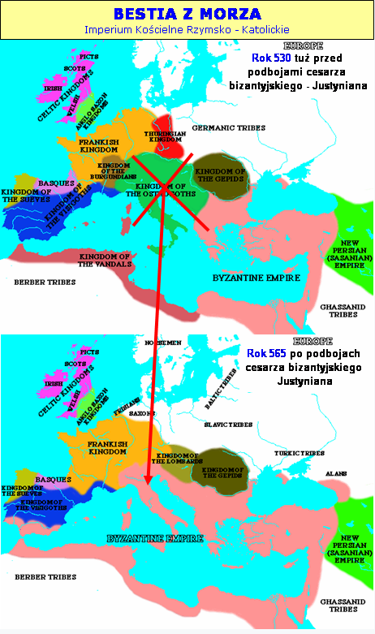

Rozdział 13
.
„I widziałem wychodzące z morza zwierzę, które miało dziesięć rogów i siedem głów, a na rogach jego dziesięć diademów, a na głowach jego bluźniercze imiona. (2) A zwierzę, które widziałem, było podobne do pantery, a nogi jego jak u niedźwiedzia, a paszcza jego jak paszcza lwa. I przekazał mu smok siłę swoją i tron swój, i wielką moc. (3) A jedna z głów jego była śmiertelnie raniona, lecz śmiertelna rana jego była wygojona. I cała ziemia szła w podziwie za tym zwierzęciem. (4) I oddali pokłon smokowi za to, że dał zwierzęciu moc, a także zwierzęciu oddali pokłon, mówiąc: Któż jest podobny do zwierzęcia i któż może z nim walczyć? (5) I dano mu paszczę mówiącą rzeczy wyniosłe i bluźniercze, dano mu też moc działania przez czterdzieści i dwa miesiące. (6) I otworzyło paszczę swoją, by bluźnić przeciwko Bogu, bluźnić przeciwko imieniu jego i przybytkowi jego, przeciwko tym, którzy mieszkają w niebie. (7) I dozwolono mu wszcząć walkę ze świętymi i zwyciężać ich; dano mu też władzę nad wszystkimi plemionami i ludami, i językami, i narodami. (8) I oddadzą mu pokłon wszyscy mieszkańcy ziemi, każdy, którego imię nie jest od założenia świata zapisane w księdze żywota Baranka, który został zabity. (9) Jeśli kto ma uszy niechaj słucha. (10) Jeśli kto jest przeznaczony do niewoli, do niewoli pójdzie; jeśli kto zabija mieczem, musi sam zginąć od miecza. Tu się okaże wytrwanie i wiara świętych. (11) I widziałem inne zwierzę, wychodzące z ziemi, które miało dwa rogi podobne do baranich, i mówiło jak smok. (12) A wykonuje ono wszelką władzę pierwszego zwierzęcia na jego oczach. Ono to sprawia, że ziemia i jej mieszkańcy oddają pokłon pierwszemu zwierzęciu, którego śmiertelna rana była wygojona. (13) I czyni wielkie cuda, tak że i ogień z nieba spuszcza na ziemię na oczach ludzi. (14) I zwodzi mieszkańców ziemi przez cuda, jakie dano mu czynić na oczach zwierzęcia, namawiając mieszkańców ziemi, by postawili posąg zwierzęciu, które ma ranę od miecza, a jednak zostało przy życiu. (15) I dano mu tchnąć ducha w posąg zwierzęcia, aby posąg zwierzęcia przemówił i sprawił, że wszyscy, którzy nie oddali pokłonu posągowi zwierzęcia, zostaną zabici. (16) On też sprawia, że wszyscy, mali i wielcy, bogaci i ubodzy, wolni i niewolnicy otrzymują znamię na swojej prawej ręce albo na swoim czole, (17) i że nikt nie może kupować ani sprzedawać, jeżeli nie ma znamienia, to jest imienia zwierzęcia lub liczby jego imienia. (18) Tu potrzebna jest mądrość. Kto ma rozum, niech obliczy liczbę zwierzęcia; jest to bowiem liczba człowieka. A liczba jego jest sześćset sześćdziesiąt sześć.” (Objawienie 13:1-18).
Poprawne zrozumienie proroctw dotyczących antychrysta i jego królestwa uwarunkowane jest, poznaniem historycznej perspektywy dotyczącej powstania, rozwoju i charakteru tej jedynej w swoim rodzaju potęgi religijno-politycznej.
Historyczne fakty są, bowiem nie do podważenia.
Po odejściu Chrystusa do Ojca, diabeł zaatakował Jego naśladowców (Objawienie 12:13). Najpierw przyszły prześladowania za sprawą Rzymu pogańskiego, ale te przyczyniły się tylko do oczyszczenia i wzrostu chrześcijaństwa.
Szatan zmienił, więc taktykę. Dwunasty rozdział Apokalipsy kończy się słowami informującymi nas, że smok, aby podjąć walkę z wierną Resztą, która jest potomstwem Niewiasty (kościoła Bożego) - ODSZEDŁ (Objawienie 12:17).
Nie odszedł jednak po to, aby dać jej spokój, lecz aby przywołać na pomoc dwóch sojuszników. Nowa taktyka szatana polegała na skorumpowaniu chrześcijaństwa od wewnątrz.
Jego pierwszy sojusznik to „Bestia z Morza”, która miała wprowadzić trwającą 1260 proroczych dni (lat) teokrację (Objawienie 13:5). Okres ten został opisany w 11 rozdziale tego opracowania.
„Bestia z Morza”.
„I widziałem wychodzące z morza zwierzę” (13:1).
„Bestia z Morza” wyłania się z wód, które w proroctwach biblijnych symbolizują narody ziemi (Objawienie 17:15), zaś podburzające je wiatry to zbrojne konflikty (Jeremiasza 51:1, 11).
W 7 rozdziale Księgi Daniela odnajdujemy wyjaśnienie, co oznaczają „Bestie”:
„(3) i cztery wielkie zwierzęta wychodziły z morza, każde inne.(17) Owe wielkie cztery zwierzęta, to czterej królowie, którzy powstaną na ziemi. (23) Czwarte zwierzę oznacza czwarte królestwo na ziemi (Daniela 7:3, 17, 23).
Tak, więc, w biblijnych przepowiedniach proroczych, bestie - zwierzęta symbolizują mocarstwa światowe.
Natomiast według wizji objawionych Danielowi, ostatnim mocarstwem władającym na ziemi miał być Rzym i tak też było i jest - bez względu na to, jakie formy przybierał w przeszłości i przybiera w teraźniejszości.
„zwierzę, które miało dziesięć rogów i siedem głów, a na rogach jego dziesięć diademów, a na głowach jego bluźniercze imiona.” (13:1).
Bestia ma siedem głów, które przede wszystkim są aluzją i wskazaniem tego, że jest ona sterowana z „siedmiu wzgórz” miasta Rzymu:
„Tu trzeba umysłu obdarzonego mądrością. Siedem głów, to siedem pagórków, na których rozsiadła się kobieta, i siedmiu jest królów. A kobieta, którą widziałeś, to wielkie miasto, które panuje nad królami ziemi.” (Objawienie 17:9).
Głowy symbolizują również poszczególne systemy władzy używane przez szatana do realizacji jego planów na ziemi. „Siedem głów… i siedmiu jest królów” (Objawienie 17:9).(Omówienie „królów” znajdzie się w 17 rozdziale).
Rogi symbolizują państwa, królów, podział królestw, siłę i władzę (Daniela 8:20, Jeremiasza 48:25, Daniela 7:24, 8:21-22, Objawienie 17:12).
Smok w dwunastym rozdziale, a także opisywana bestia miała na głowie dziesięć rogów, które zapowiadały rozpad Imperium Rzymskiego na niezależne państwa, które miały przejąć niektóre elementy jego kultury.
Liczba 10 stanowiła literalną liczbę po upadku Rzymu, później stanowi już symboliczną liczbę - wyobrażającą państwa Europy. Taki stan rzeczy miał dotrwać do czasów końca.
„Bestia” dochodzi do władzy po rozpadzie Imperium Rzymskiego, na co wskazuje między innymi położenie diademów, które zmieniły położenie z głów na rogi, które symbolizują narody, powstałe na gruzach Imperium Zachodnio Rzymskiego.
Rzymianie podbili cały basen Morza Śródziemnego. Ich imperium rozpadło się dopiero w V wieku za sprawą barbarzyńskich plemion (10 rogów), które wdarły się i osiedliły w jego granicach, przejmując wiele elementów jego kultury. Narody te dały początek współczesnym państwom Europy:
1. Swewowie (Portugalia).
2. Wizygoci (Hiszpania).
3. Alemani (Niemcy).
4. Burgundowie (Szwajcaria).
5. Anglosasi (Anglia).
6. Longobardowie (Włochy).
7. Frankowie (Francja).
8. Wandalowie.
9. Herulowie.
10. Ostrogoci.
Możemy wyróżnić trzy zasadnicze etapy dotyczące głów oraz rogów zwierzęcia:
1. W 12 rozdziale diademy znajdują się na głowach „Bestii” (Objawienie 12:3), gdyż władzę sprawowała jedna z siedmiu głów - pogański smok reprezentujący Imperium Rzymskie.
2. W 13 rozdziale diademy znajdują się na dziesięciu rogach „Bestii” (Objawienie 13:1), gdyż był to czas panowania rogów wyrosłych na głowie Imperium Rzymskiego, a więc podzielonych państw Europy na czele z Małym Rogiem.
3. W 17 rozdziale „Bestia” nie ma diademów (Objawienie 17:3), gdyż po roku 1798 na skutek osłabienia papiestwa, nastąpiło oddzielenie kościoła od państwa.
(W 1798 roku, po trwającej 1260 lat teokracji, Rewolucja Francuska dała początek rządom cechującym się rozdziałem religii od państwa).
Siedmiogłowa bestia przybiera kolor szkarłatny, gdy władze dopuszczają się „nierządu” z klerem, wówczas jest „Bestią Szkarłatną” (Objawienie 17:3), czy bluźniącą „Bestią z Morza” (Objawienie 13:1).
Natomiast, gdy przybiera charakter antyklerykalny, zwana jest w Apokalipsie „Bestią z Czeluści” (Objawienie 11:7, 17:8).
Smok symbolizował rządy podporządkowane religii pogańskiej, których apoteozą było Imperium Rzymskie (Objawienie 12:3).
„Smok” nie nosi w Apokalipsie imion bluźnierczych, gdyż pogaństwo nie czyniło roszczeń o „chrześcijańskiej” naturze. Bluźnierstwo polega zaś na uzurpacji atrybutów Bożych oraz stawianiu siebie w miejscu Chrystusa. Takie roszczenia mogły być jedynie dziełem odstępczego „chrześcijaństwa”, dlatego nosi je „Bestia z Morza” (Objawienie 13:1). „Bestia Szkarłatna” natomiast cała okryta jest bluźnierstwami (Objawienie 17:3), gdyż reprezentuje ona apogeum odstępstwa.
Przytoczmy parę przykładów, ukazujących proces powstawania bestii.
Od IV wieku „chrześcijaństwo” stało się instytucją zorganizowanego duchowieństwa i dokonało połączenia z polityczną władzą Imperium Rzymskiego, a później z pozostałą częścią Zachodniej Europy.
28 lutego 380 roku cesarze Walentynian II i Teodozjusz I postanowili, że „chrześcijaństwo”, zgodne z interpretacją biskupa Rzymu, jest obowiązującą religią w Cesarstwie, nazywając tych, którzy nie przyjmą tego za „obłąkanych i chorych psychicznie” i którzy „będą karani wpierw boską zemstą, a następnie odpłatą z naszej własnej inicjatywy, którą będziemy stosować, zgodnie z boskim osądzeniem”.
Ponadto:
„Wierzmy w jedno Bóstwo Ojca, Syna i Ducha Świętego, o jednakim majestacie w Świętej Trójcy. Rozkazujemy, aby zwolennicy tej wiary zostali nazwani Katolickimi Chrześcijanami, piętnujemy wszystkich naśladujących bezsensownie inne religie podłym imieniem „heretycy”, i nie pozwalamy, aby ich niekonwencjonalne zgromadzanie się nosiło imię kościoła. Oprócz potępienia przez boski sąd, muszą się liczyć z ciężką karą, którą nasz autorytet, prowadzony niebiańską mądrością, stosownie obmyśli, aby ją odpowiednio nałożyć...”
W krótkim czasie „chrześcijańscy” cesarze dokonali wyeliminowania wolności poglądów i nałożyli totalitarny system teokratyczny, więc mogli pogratulować sobie w roku 423 dobrze wykonanej pracy stwierdzając: „Przepisy konstytucji wcześniej ogłaszane powinny zdławić wszystkich pogan, którzy przetrwają, choć uważamy, ze żaden nie pozostał”.
Konstantyn Wielki, który wydał edykt przeciw nim już 1 września 326 roku, od początku prześladował heretyków i schizmatyków. Podstawową zasadą, na której oparte były prześladowania, było odejście od oficjalnej religii państwowej. Herezja została uznana za „publiczne przestępstwo - cokolwiek jest popełnione przeciwko bożej religii ze szkodą dla wszystkich”.
„Te osoby, które mogą być ujawnione, jako odchodzące, nawet w mniejszym punkcie doktryny, od dogmatów i drogi religii katolickiej zostaną uznani za heretyków i muszą być przedmiotem sankcji, które zostały nakazane przeciwko nim”. (3 września 395 rok, Cod Theod 16.5.28).
I wreszcie przypieczętowanie narodzin „Bestii”:
„W szóstym wieku cesarz Justynian wyraźnie włączył katolicką doktrynę wiary, szczególnie Trójcę, do rzymskiego prawa państwowego. W księdze 1, zatytułowanej „De Trinitate et Fide catholica” („Trójca w wierze katolickiej”), rozdział 1 potwierdza ustanowienie wiary katolickiej i Trójcy, jako oficjalnej religii państwowej i zabrania jakiegokolwiek krytycznego wyrażania myśli pod karą spalenia na stosie.” (A Journal from The Radical Reformation, A Testimony to Biblical Unitarianism, Volume 11, No. 2, 2003, pp. 34-41. 34-41.).
Justynian I (527–565), w 533 roku przyznał pierwszeństwo biskupom rzymskim. Był to prawdziwy tryumf biskupów rzymskich.
Jednak uwieńczeniem ich władczej żądzy i zapewnieniem sobie niezależności politycznej oraz panowania nad światem, stało się powstanie „Państwa Kościelnego” w 756 roku, kiedy król Franków Pepin Mały – syn Karola Młota i ojciec Karola Wielkiego, po rozgromieniu Longobardów w północnych Włoszech złożył na ołtarzu Bazyliki św. Piotra klucze podbitych przez niego miast Półwyspu Apenińskiego.
Darowizna Pepina była momentem przełomowym w historii świeckiej władzy papieży, gdyż dała początek dużemu terytorialnie „Państwu Kościelnemu” (756 rok), które przetrwało do 1870 roku.
W ten sposób papiestwo stało się potęgą religijno-polityczną i zajęło miejsce cesarstwa rzymskiego.
Pozostałością po tym Państwie jest w czasach obecnych suwerenne i niezależne państwo kościelne, którego terytorium ogranicza się jednak tylko do Watykanu.
„A zwierzę, które widziałem, było podobne do pantery, a nogi jego jak u niedźwiedzia, a paszcza jego jak paszcza lwa.” (13:2).
Zauważmy, że zwierzęta występujące w wizji Daniela 7:2-7, to te same dzikie zwierzęta:
- „Lew” - symbolizujący Babilonię.
2. „Niedźwiedź” - symbol Medo-Persji.
3. „Lampart” - symbol Królestwa Greckiego.
Te same symbole zostały użyte w odniesieniu do omawianej tutaj „Bestii - Zwierzęcia”, dlatego, że początkowo bestia uformowała się z „DZIKICH BARBARZYŃSKICH PLEMION”, stąd porównanie do dzikich zwierząt.
Bestia z Morza dziedziczy po trzech bestiach wymienionych w siódmym rozdziale księgi Daniela, ale jej prawdziwym „ojcem” jest czwarte zwierze, czyli smok, który reprezentuje w Apokalipsie zarówno szatana, jak pogański Rzym, a to wskazuje na to, że odstępcze chrześcijaństwo jest bezpośrednim sukcesorem Imperium Rzymskiego.
Prorok Daniel również ukazuje Bestię z 13 rozdziału księgi Objawienia pod symbolem „Małego Rogu”.
„I tak rzekł: Czwarte zwierzę oznacza czwarte królestwo na ziemi, które jest inne niż wszystkie królestwa; ono pochłonie całą ziemię, podepcze i zmiażdży ją. (24) A dziesięć rogów znaczy, że z tego królestwa powstanie dziesięciu królów, a po nich powstanie inny; ten będzie inny niż poprzedni i obali trzech królów. (25) I będzie mówił zuchwałe słowa przeciwko Najwyższemu, będzie męczył Świętych Najwyższego, będzie zamyślał odmienić czasy i zakon; i będą wydani w jego moc aż do czasu i dwóch czasów i pół czasu. (26) Potem odbędzie się sąd i pozbawią go władzy, aby ją ostatecznie zniszczyć i obalić.” (Daniela 7:23-26).
„Mały Róg” wyrasta wśród dziesięciu narodów, które przyczyniły się do rozpadu Rzymu, dlatego wiemy, że jego międzynarodowy debiut musiał wystąpić, niedługo po upadku Zachodniego Imperium Rzymskiego (476 rok), a więc przypada na wczesne średniowiecze.
Zapowiedź, że okaże się większy od owych dziesięciu wskazuje, że zdominuje państwa zachodniej Europy, zajmując miejsce dawnego Rzymu.
„Obali trzech królów”.
Spośród państw podzielonej Europy (dziesięć rogów) miał wyłonić się Mały Róg - intrygujący, odmienny i przewyższający je mocą. Za jego sprawą trzy z owych dziesięciu rogów (narodów) przestały istnieć. Były to Ariańskie narody (nie uznawały dogmatu trójcy).
Po zwycięstwach pierwszego katolickiego króla Franków, Chlodwiga, kościół rzymski podporządkował sobie niemal całą Europę Zachodnią, jednakże trzy plemiona ariańskie krępowały poczynania papiestwa w Italii. Wszystkie trzy upadły za sprawą jego interwencji:
- w 493/505 roku Herulowie,
- w 530/534 roku Wandalowie,
- Ostrogoci stracili znaczenie w 538 roku, gdy usunięto ich z Rzymu.
Znaczną rolę przy tym odegrał cesarz bizantyjski – Justynian I Wielki, który postawił sobie ambitny cel odzyskania terytorium dawnego Cesarstwa Rzymskiego (Imperium Romanum) i jego potęgi.

„I przekazał mu smok siłę swoją i tron swój, i wielką moc.” (13:2).
W rezultacie była to kontynuacja „Imperium Romanum” z biskupem Rzymu na czele.
Historyk Aleksander Flick napisał:
„Z ruin politycznego państwa rzymskiego wyrosło wielkie duchowe imperium w gigantycznej postaci kościoła rzymskiego.”
Religijno-polityczna władza biskupów Rzymu zwiększała się proporcjonalnie do słabnącej pozycji cesarzy rzymskich. Pełną moc papiestwo uzyskało dopiero niebawem po upadku Imperium Rzymskiego. Historyk Carl Eckhardt napisał:
„Pod panowaniem Imperium Rzymskiego papieże nie dysponowali świecką mocą, ale kiedy Imperium rozpadło się, a jego miejsce zajęły barbarzyńskie królestwa, wówczas kościół rzymski uniezależnił się w sprawach religii oraz zdominował przebieg spraw świeckich.”
Krótko mówiąc, dawny pogański Rzym został przekształcony w cesarstwo rzymskokatolickie. Rzymska instytucja religijno-polityczna przejęła, więc nie tylko cały szereg kultów i wierzeń dawnego pogańskiego imperium, elementy stroju liturgicznego pogańskich kapłanów, tytuły rzymskich monarchów, ale również zasady prawne dawnego imperium oraz nieograniczoną (nieomylną) władzę, która była i jest głównym celem papiestwa.
Papiestwo odziedziczyło po dawnym Rzymie między innymi miasto na siedmiu wzgórzach, Kurię Rzymską (rzymski Senat), nazwę „kościół rzymski”, łacinę, jako język liturgiczny, prawo rzymskie wraz z torturami. Papieże przybrali purpurę i szkarłat cesarzy, przyjęli tytuł, który wcześniej należał do władcy rzymskiego – Pontifex Maximus.
Smok (szatan sterujący pogańskim Rzymem) oddał „Bestii” swój tron - wypełniło się to również bardzo dosłownie, gdyż siedziba papiestwa znajduje się do dziś w centrum Rzymu - byłej stolicy cesarzy, skąd też papiestwo władało Europą przez 13 wieków po upadku Rzymu.
„A jedna z głów jego była śmiertelnie raniona, lecz śmiertelna rana jego była wygojona.” (13:3).
Imperium Zachodnio-rzymskie upadło w 476 roku, lecz ożyło na nowo za sprawą kościoła rzymsko-katolickiego.
Jako Imperium Rzym został pokonany, lecz jako cywilizacja zmierzał do odrodzenia. Dokonało się to dzięki kościołowi rzymskiemu, który rządził światem dłużej oraz bardziej despotycznie niż jakiekolwiek z poprzednich mocarstw.
Nie ma wątpliwości, że zranioną głową „Zwierzęcia” było Zachodnie Imperium pogańskiego Rzymu, ta głowa podniosła się na nowo, jako kościelne „Imperium rzymsko-katolickie”.
„a na głowach jego bluźniercze imiona. (3) I cała ziemia szła w podziwie za tym zwierzęciem. (4) I oddali pokłon smokowi za to, że dał zwierzęciu moc, a także zwierzęciu oddali pokłon, mówiąc: Któż jest podobny do zwierzęcia i któż może z nim walczyć? (5) I dano mu paszczę mówiącą rzeczy wyniosłe i bluźniercze, dano mu też moc działania przez czterdzieści i dwa miesiące. (6) I otworzyło paszczę swoją, by bluźnić przeciwko Bogu, bluźnić przeciwko imieniu jego i przybytkowi jego, przeciwko tym, którzy mieszkają w niebie. (7) I dozwolono mu wszcząć walkę ze świętymi i zwyciężać ich; dano mu też władzę nad wszystkimi plemionami i ludami, i językami, i narodami. (8) I oddadzą mu pokłon wszyscy mieszkańcy ziemi, każdy, którego imię nie jest od założenia świata zapisane w księdze żywota Baranka, który został zabity. (9) Jeśli kto ma uszy niechaj słucha. (10) Jeśli kto jest przeznaczony do niewoli, do niewoli pójdzie; jeśli kto zabija mieczem, musi sam zginąć od miecza. Tu się okaże wytrwanie i wiara świętych.” (13:1, 4-10).
Tylko jedna potęga w historii doskonale wypełnia tę charakterystykę. Jest to system, władza o dużym znaczeniu i oddziaływaniu na losy świata.
Mocą tą BEZ NAJMNIEJSZEGO CIENIA WĄTPLIWOŚCI JEST PAPIESTWO, o którym również czytamy u proroka Daniela, gdzie na głowie smoka/zwierzęcia pojawia się „Mały Róg” (Daniela 7:23-26), który reprezentuje religijno-polityczną instytucję o cechach antychrysta.
Podobieństwa między „Małym Rogiem” i „Bestią z Morza” nie są przypadkowe. Chodzi o tę samą moc. Apostoł Paweł również na nią wskazuje, personifikując ją w „Synu Zatracenia”.
„Syn Zatracenia”.
„Niechaj was nikt w żaden sposób nie zwodzi; bo nie nastanie pierwej, zanim nie przyjdzie odstępstwo i nie objawi się człowiek niegodziwości, syn zatracenia, (4) przeciwnik, który wynosi się ponad wszystko, co się zwie Bogiem lub jest przedmiotem boskiej czci, a nawet zasiądzie w świątyni Bożej, podając się za Boga. (5) Czy nie pamiętacie, że jeszcze będąc u was, o tym wam mówiłem? (6) A wiecie, co go teraz powstrzymuje, tak, iż się objawi dopiero we właściwym czasie. (7) Albowiem tajemna moc nieprawości już działa, tajemna dopóty, dopóki ten, który teraz powstrzymuje, nie zejdzie z pola. (8) A wtedy objawi się ów niegodziwiec, którego Pan Jezus zabije tchnieniem ust swoich i zniweczy blaskiem przyjścia swego. (9) A ów niegodziwiec przyjdzie za sprawą szatana z wszelką mocą, wśród znaków i rzekomych cudów, (10) i wśród wszelkich podstępnych oszustw wobec tych, którzy mają zginąć, ponieważ nie przyjęli miłości prawdy, która mogła ich zbawić.” (2 Tesaloniczan 2:1-11).
„zasiądzie w świątyni Bożej, podając się za Boga”.
Świątynia Boża, to nowotestamentowy lud Boży - żywe kamienie, budujące się na „przybytek miły Panu” (1 Piotra 2:5, Efezjan 2:21).
„Czy nie wiecie, że świątynią Bożą jesteście i że Duch Boży mieszka w was?” (1 Koryntian 3:16).
„Jakiż układ między świątynią Bożą a bałwanami? Myśmy, bowiem świątynią Boga żywego, jak powiedział Bóg: Zamieszkam w nich i będę się przechadzał pośród nich, I będę Bogiem ich...” (2 Koryntian 6:16).
Antychryst podszywa się pod Chrystusa, a jednocześnie obnaża swoje prawdziwe oblicze i swoje rzeczywiste zamiary.
Przede wszystkim czyni to poprzez przypisanie sobie pozycji i tytułów należnych wyłącznie Bogu i Chrystusowi (2 Tesaloniczan 2:4), co znalazło wyraz między innymi w encyklice z 20 czerwca 1894, Leon XIII zadeklarował: „Na tej ziemi zajmujemy miejsce Boga Wszechmocnego,” domagając się „tak zupełnej uległości i posłuszeństwa woli Kościoła i papieża, jak wobec samego Boga”.
Apostoł Paweł, tak jak wcześniej Daniel, dowodzi, że odstępstwo ujawni się w „kościele” Bożym w pełni, ale dopiero po upadku tego, kto w czasach apostolskich antychrysta powstrzymywał (2 Tesaloniczan 2:6). Również chrześcijanie w pierwszych wiekach jednomyślnie spostrzegali Imperium Rzymskie, jako, to, „co go teraz powstrzymuje, tak, iż się objawi dopiero we właściwym czasie. (2 Tesaloniczan 2:6).
Tertulian napisał około 200 roku:
„Czyż to nie upadek Imperium Rzymskiego, które podzielone zostanie na dziesięć królestw, przyniesie Antychrysta?”.
„Albowiem tajemna moc nieprawości już działa, tajemna dopóty, dopóki ten, który teraz powstrzymuje, nie zejdzie z pola. (8) A wtedy objawi się ów niegodziwiec, którego Pan Jezus zabije tchnieniem ust swoich i zniweczy blaskiem przyjścia swego” (2 Tesaloniczan 2:7-8).
Jak widzimy duch antychrysta formował się już w I wieku, tak aby pojawić się w pełni mocy po upadku Imperium Rzymskiego, działając aż do powtórnego przyjścia Chrystusa. Z tego jasno wynika, że apostoł Paweł nie mógł mieć na myśli wyłącznie jednostki, którą w czasach końca posłuży się szatan. Mówił o wpływowej instytucji „chrześcijańskiej”, której korzenie sięgają pierwszych wieków, w których istniało jeszcze Imperium Rzymskie. Paweł przewidywał, że odstępstwo, widoczne w zarodku już w jego czasach, ujawni się w pełni dopiero, gdy Rzym pogański ustąpi „chrześcijańskiemu”, a na miejscu cezara zasiądzie zwierzchnik kościoła, tworząc odpowiedni system, oddziałujący na losy ludzi i świata na czele, którego stoi papież.
System ten znalazł wypełnienie w papiestwie w absolutnym tego słowa znaczeniu - demoralizujący tryb życia papieży, korupcja, symonia, nepotyzm, rozwiązłość wielu papieży średniowiecza, powołanie inkwizycji w celu tropienia czarownic i innowierców, organizowanie krucjat przeciwko niewiernym oraz „heretykom” (albigensi, waldensi) i pozbawienie życia wielu milionów ludzi (szacuje się około 50 – 60 milionów) – oto historia papiestwa.
Wielu papieży wstąpiło na tron, mordując (zwykle za pomocą trucizny) swych poprzedników. Wielu walczyło na polach bitew i wydawało wyroki męczeńskiej śmierci.
Krwawe dzieje papiestwa bezbłędnie, więc i jednoznacznie dowodzą, z jaką instytucją mamy do czynienia i kto za tym wszystkim stoi. Jedno jest pewne: nie stoi za tym duch Chrystusowy, lecz przeciwny – szatański! Jak bowiem napisał apostoł Paweł, „ów niegodziwiec przyjdzie za sprawą szatana z wszelką mocą, wśród znaków i rzekomych cudów i wśród wszelkich podstępnych oszustw” (2 Tesaloniczan 2:9–10).
A zatem wszelka moc (polityczne możliwości), znaki (sakramentalne), rzekome cuda (przeistoczenie, objawienia, rzekome uzdrowienia w miejscach kultu maryjnego lub za sprawą Jana Pawła II) i wszelkie podstępne oszustwa (nie tylko doktrynalne, ale i takie jak na przykład „donacja Konstantyna”) – wszystko to demaskuje system, na czele, którego stoi „syn zatracenia”, który jak Judasz pocałunkiem zdradza swego Pana, nadal twierdząc, że służy swemu Mistrzowi.
Zobacz ciąg dalszy w CZĘŚCI 2
https://mojabiblia.github.io/j/47.html
=
kopia strony: https://jehoszua.ddv.pl/readarticle.php?article_id=46 Wszelkie prawa autorskie należą się autorowi tej strony
zab455588cfz